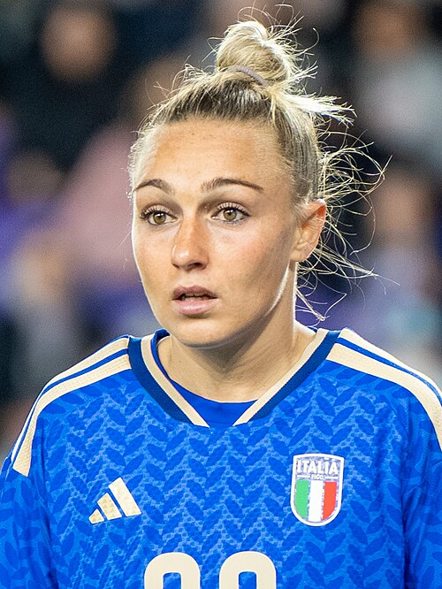

Ezzcoins › Player pages › Giada Greggi
83
CM

Greggi
Roma
Photo (cropped): Bryan Berlin · CC BY-SA 4.0 · Wikimedia Commons
Photo source
https://commons.wikimedia.org/wiki/File:Giada_Greggi_USWNT_vs_Italy_Nov_28_2025-213_(cropped).jpg
Licence: https://creativecommons.org/licenses/by-sa/4.0
Giada Greggi
83 CM · Roma · Calcio A Femminile ·  Italy
Italy
No console price yet. Add this player to your watchlist on Ezzcoins: the most-watched players get a price every hour.
PAC84
SHO71
PAS73
DRI85
DEF76
PHY73
- Position
- CM (also CDM)
- Club
- Roma
- League
- Calcio A Femminile
- Nation
- Italy
- Skill moves
- 3★
- Weak foot
- 5★
- Preferred foot
- Right
- Football
- Women's football